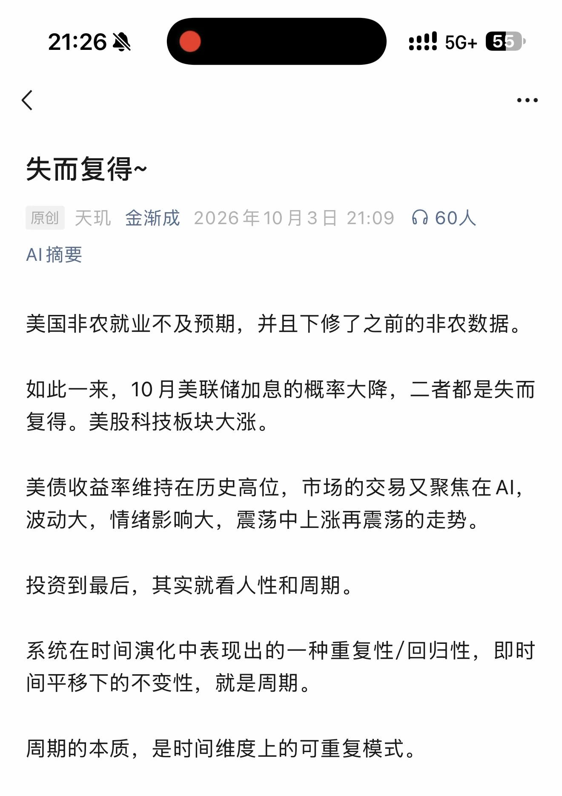
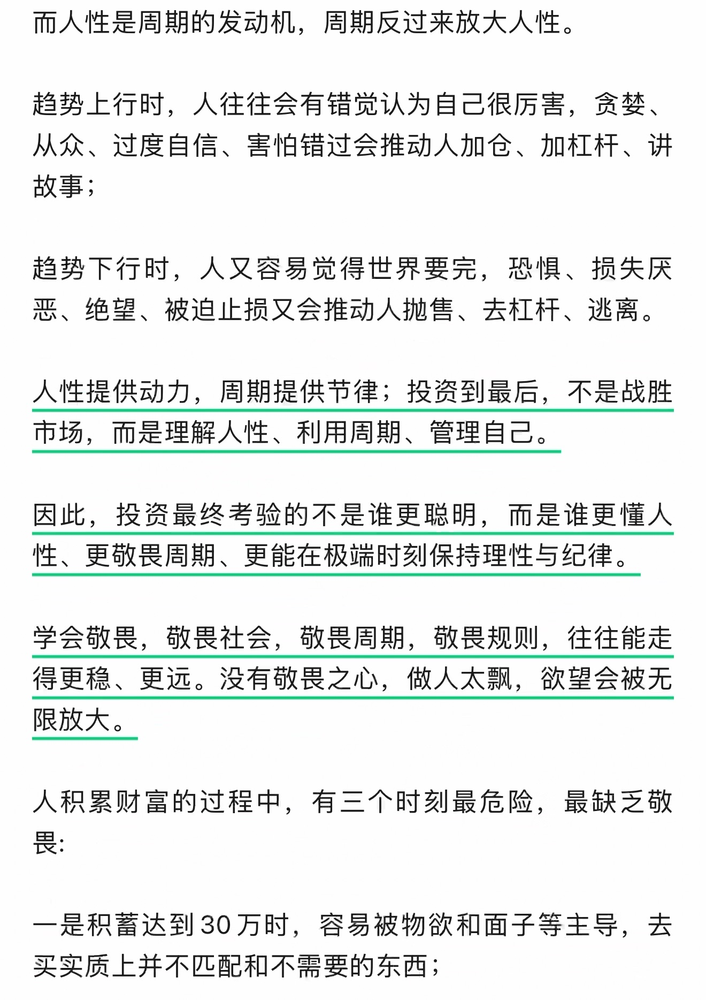
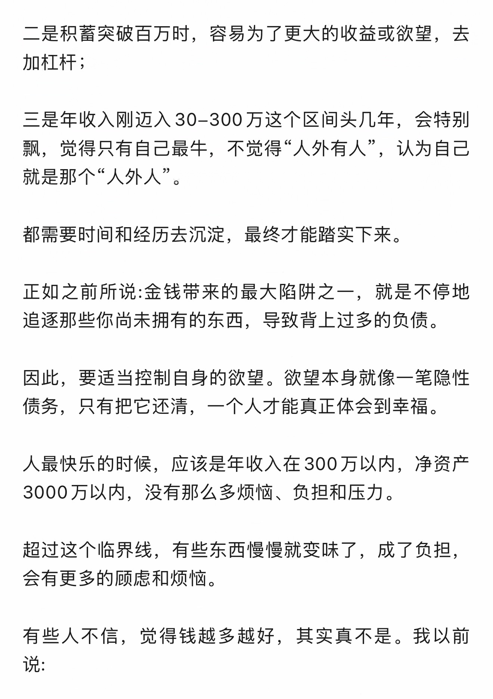
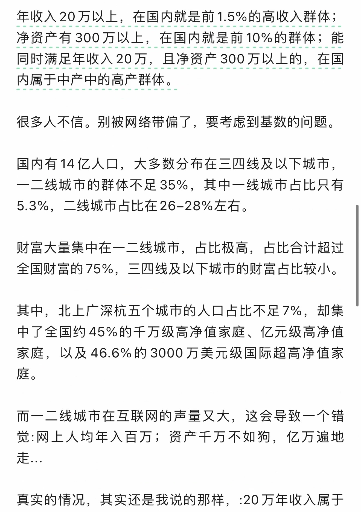
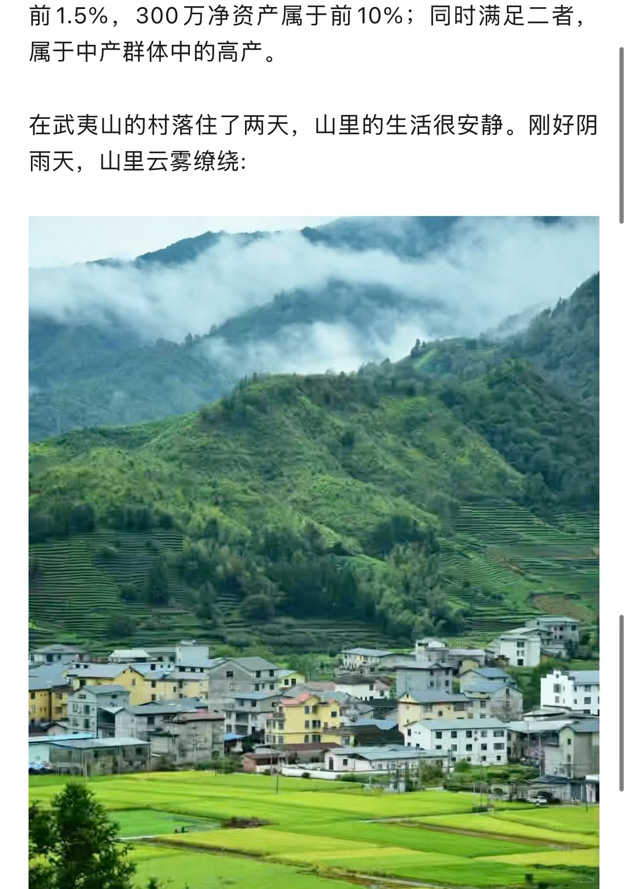
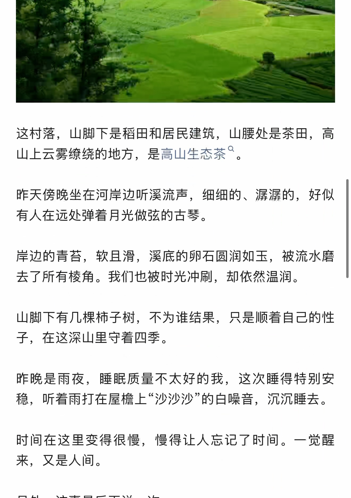
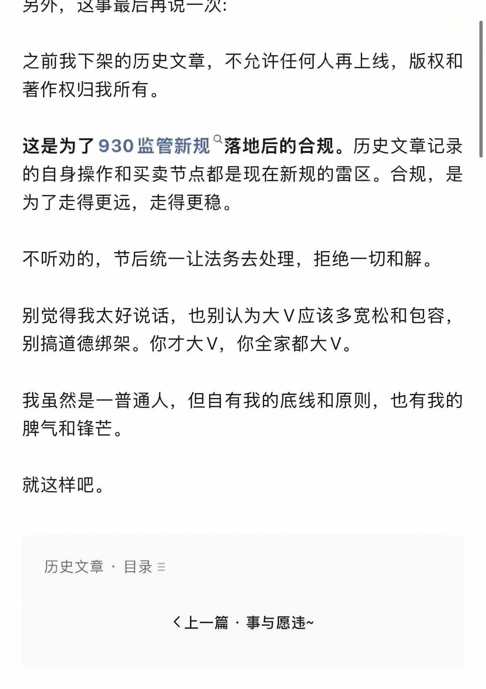
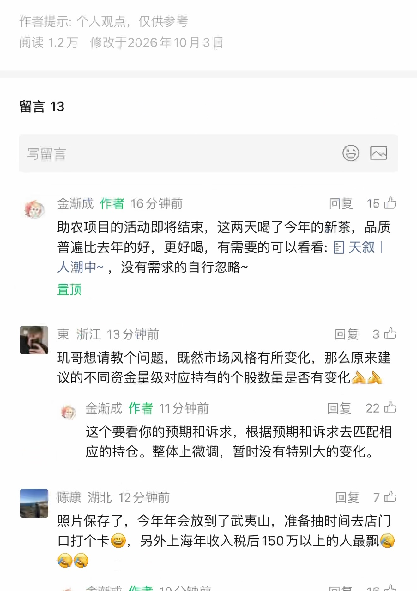
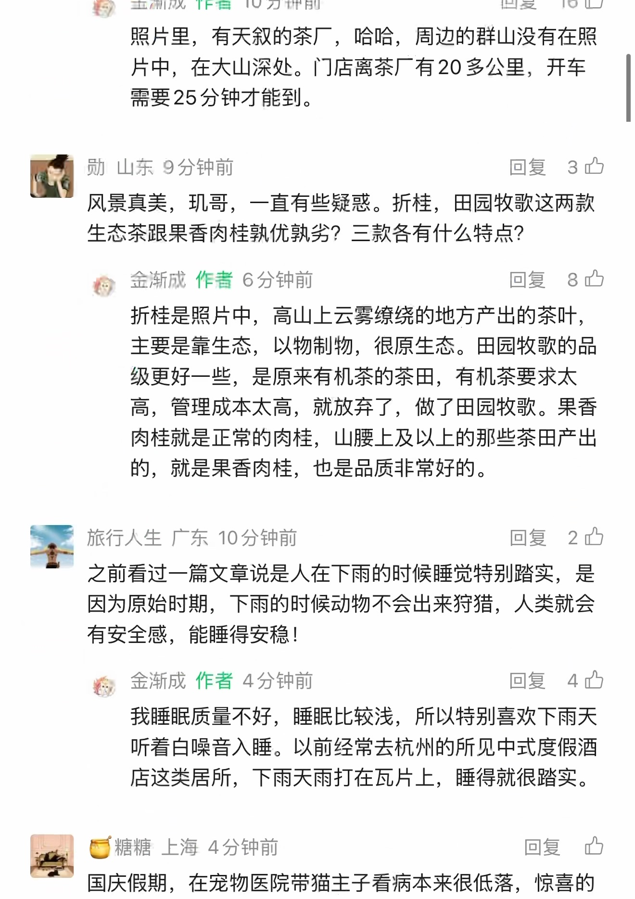
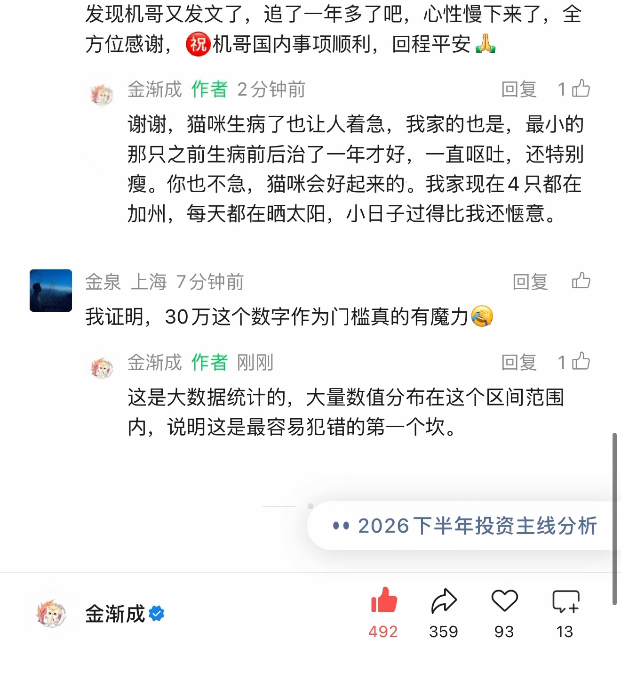

失而复得~
原始截图优先 · OCR 仅辅助检索
原始 PDF 不公开，本页展示捕获页面的截图。 下方优先展示原始截图；自动识别文字默认收起，仅辅助检索与对照。OCR 由程序自动识别，尚未逐字核对，可能存在错字、漏字、漏行、顺序或断行错误。留言与作者回复仅限截图中可见的内容，不代表完整线上留言，也未据此推断留言总数。
OCR 识别提示（待核对）
- OCR 自动识别文字，尚未逐字校对；可能错字、漏字、漏行，数字、姓名、标点及断行也可能有误，请以截图为准。
- 这里只保留 PDF 已截到的正文、留言和作者回复；截图以外的留言不在此存档中。
- 未从截图推断留言总数或回复关系；手机界面文字也可能混入 OCR。
- 低置信标记仅为机器提示，并不表示未标记的文字已经准确。
识别工具：tesseract 5.5.0 · tesseract-ocr/tessdata_best chi_sim。识别器置信度仅用于提示核对，不是文字准确率。
第 1 页 · 原始截图

查看本页自动识别文字（OCR待核对） · 7 处低置信度提示
以下为未经逐字核对的自动识别结果，请以上方原图为准。
cx 人一 …e
《
失而复得 ~原创天现金渐成 2026 年 10 月 3 日 21:09 (OCS Al 摘要
美国非农就业不及预期， 并且下修了之前的非农数据。
如此一来，10 月美联储加息的概率大降， 二者都是失而复得。 美股科技板块大涨。
美债收益率维持在历史高位， 市场的交易又聚焦在 Al，波动大， 情绪影响大， 震荡中上涨再震荡的走势。
投资到最后， 其实就看人性和周期。
系统在时间演化中表现出的一种重复性 /回归性， 即时间平移下的不变性， 就是周期。
周期的本质， 是时间维度上的可重复模式。
识别器标记 7 处低置信度，请对照截图核对
这些是识别器的风险提示，并不等于已确认的错误。
- cx 人一 …e
- 原创天现金渐成 2026 年 10 月 3 日 21:09 (OCS
- 波动大， 情绪影响大， 震荡中上涨再震荡的走势。
第 2 页 · 原始截图

查看本页自动识别文字（OCR待核对） · 35 处低置信度提示
以下为未经逐字核对的自动识别结果，请以上方原图为准。
而人性是周期的发动机， 周期反过来放大人性。
趋势上行时， 人往往会有错觉认为自己很历害， 贪禁、从众、 过度自信、 害怕错过会推动人加仓、 加杠杆、 讲故事 ;
趋势下行时， 人又容易觉得世界要完， 丽惧、 损失厌恶、 绝望、 被迫止损又会推动人抛售、 去杠杆、 和逃离。
人性提供动力， 周期提供节律 ; 投资到最后， 不是战胜市场， 而是理解人性、 利用周期、 管理自己。
因此， 投资最终考验的不是谁更聪明， 而是谁更懂人性、 更敬畏周期、 更能在极端时刻保持理性与纪律。
学会敬旦， 敬旦社会， 敬晨周期， 敬晨规则， 人往往能走得更稳、 更远。 没有敬晨之心， 做人太球， 欲望会被无限放大。
人积累财富的过程中， 有三个时刻最危险， 最缺乏敬和
一是积蕾达到 30 万时， 容易被物欲和面子等主导， 去买实质上并不匹配和不需要的东西 ;
识别器标记 35 处低置信度，请对照截图核对
这些是识别器的风险提示，并不等于已确认的错误。
- 趋势上行时， 人往往会有错觉认为自己很历害， 贪禁、
- 趋势下行时， 人又容易觉得世界要完， 丽惧、 损失厌
- 恶、 绝望、 被迫止损又会推动人抛售、 去杠杆、 和逃离。
- 因此， 投资最终考验的不是谁更聪明， 而是谁更懂人
- 性、 更敬畏周期、 更能在极端时刻保持理性与纪律。
- 学会敬旦， 敬旦社会， 敬晨周期， 敬晨规则， 人往往能走
- 得更稳、 更远。 没有敬晨之心， 做人太球， 欲望会被无
- 人积累财富的过程中， 有三个时刻最危险， 最缺乏敬
- 和
- 一是积蕾达到 30 万时， 容易被物欲和面子等主导， 去
- 买实质上并不匹配和不需要的东西 ;
第 3 页 · 原始截图

查看本页自动识别文字（OCR待核对） · 15 处低置信度提示
以下为未经逐字核对的自动识别结果，请以上方原图为准。
二是积蕾突破百万时， 容易为了更大的收益或欲望， 去加杠杆 ;
三是年收入刚迈入 30-300 万这个区间头几年， 会特别球， 觉得只有自己最牛， 不觉得 ”人外有人 “， 认为自己就是那个人外人。
都需要时间和经历去沉淀， 最终才能踏实下来。
正如之前所说 :金钱带来的最大陷阱之一， 就是不停地追逐那些你尚未拥有的东西， 导致背上过多的负债。
因此， 要适当控制自身的欲望。 欲望本身就像一笔隐性债务， 只有把它还清， 一个人才能真正体会到幸福。
人最快乐的时候， 应该是年收入在 300 万以内， 净资产3000 万以内， 没有那么多烦恼、 负担和压力。
超过这个临界线， 有些东西慢慢就变味了， 成了负担，会有更多的顾虑和烦恼。
有些人不信， 觉得钱越多越好， 其实真不是。 我以前说 :
识别器标记 15 处低置信度，请对照截图核对
这些是识别器的风险提示，并不等于已确认的错误。
- 二是积蕾突破百万时， 容易为了更大的收益或欲望， 去
- 加杠杆 ;
- 球， 觉得只有自己最牛， 不觉得 ”人外有人 “， 认为自己
- 就是那个人外人。
- 都需要时间和经历去沉淀， 最终才能踏实下来。
- 追逐那些你尚未拥有的东西， 导致背上过多的负债。
- 债务， 只有把它还清， 一个人才能真正体会到幸福。
- 人最快乐的时候， 应该是年收入在 300 万以内， 净资产
- 3000 万以内， 没有那么多烦恼、 负担和压力。
- 超过这个临界线， 有些东西慢慢就变味了， 成了负担，
- 会有更多的顾虑和烦恼。
第 4 页 · 原始截图

查看本页自动识别文字（OCR待核对） · 11 处低置信度提示
以下为未经逐字核对的自动识别结果，请以上方原图为准。
年收入 20 万以上， 在国内就是前 1.5% 的高收入群体 ;净资产有 300 万以上， 在国内就是前 10% 的群体 ; 能同时满足年收入 20 万， 且净资产 300 万以上的， 在国内属于中产中的高产群体。
很多人不信。 别被网络带仿了， 要考虑到基数的问题。
国内有 14 亿人口， 大多数分布在三四线及以下城市，一二线城市的群体不足 35%， 其中一线城市占比只有5.3%， 二线城市占比在 26-289% 左右。
财富大量集中在一二线城市， 占比极高， 占比合计超过全国财富的 75%， 三四线及以下城市的财富占比较小。
其中， 北上广深杭五个城市的人口占比不足 7%， 却集中了全国约 45% 的干万级高净值家庭、 亿元级高净值家庭， 以及 46.6% 的 3000 万美元级国际超高净值家庭。
而一二线城市在互联网的声量又大， 这会导致一个错觉 : 网上人均年入百万 ; 资产二万不如狗， 亿万遍地走 .…
真实的情况， 其实还是我说的那样，:20 万年收入属于
识别器标记 11 处低置信度，请对照截图核对
这些是识别器的风险提示，并不等于已确认的错误。
- 同时满足年收入 20 万， 且净资产 300 万以上的， 在国
- 很多人不信。 别被网络带仿了， 要考虑到基数的问题。
- 5.3%， 二线城市占比在 26-289% 左右。
- 财富大量集中在一二线城市， 占比极高， 占比合计超过
- 中了全国约 45% 的干万级高净值家庭、 亿元级高净值
- 觉 : 网上人均年入百万 ; 资产二万不如狗， 亿万遍地
第 5 页 · 原始截图

查看本页自动识别文字（OCR待核对） · 3 处低置信度提示
以下为未经逐字核对的自动识别结果，请以上方原图为准。
前 1.5%，300 万净资产属于前 10%; 同时满足二者，属于中产群体中的高产。
在武夷山的村落住了两天， 山里的生活很安静。 刚好阴雨天， 山里云雾凌绕 :
识别器标记 3 处低置信度，请对照截图核对
这些是识别器的风险提示，并不等于已确认的错误。
- 在武夷山的村落住了两天， 山里的生活很安静。 刚好阴
- 雨天， 山里云雾凌绕 :
第 6 页 · 原始截图

查看本页自动识别文字（OCR待核对） · 25 处低置信度提示
以下为未经逐字核对的自动识别结果，请以上方原图为准。
这村落， 山脚下是稻田和居民建筑， 山腰处是茶田， 高山上云雾凌绕的地方， 是高山生态茶 “。
昨天傍晚坐在河岸边听溪流声， 细细的、 涯漏的， 好似有人在远处弹着月光做弦的古琴。
岸边的青苔， 软且滑， 溪底的卵石圆润如玉， 被流水磨去了所有棱角。 我们也被时光冲刷， 却依然温润。
山脚下有几棵柿子树， 不为谁结果， 只是顺着自己的性子， 在这深山里守着四季。
昨晚是雨夜， 睡眠质量不太好的我， 这次睡得特别安稳， 听着雨打在屋榴上 “沙沙沙 ”的白噪音， 沉沉睡去。
时间在这里变得很慢， 慢得让人忘记了时间。 一觉醒来， 又是人间。
识别器标记 25 处低置信度，请对照截图核对
这些是识别器的风险提示，并不等于已确认的错误。
- 这村落， 山脚下是稻田和居民建筑， 山腰处是茶田， 高
- 山上云雾凌绕的地方， 是高山生态茶 “。
- 昨天傍晚坐在河岸边听溪流声， 细细的、 涯漏的， 好似
- 有人在远处弹着月光做弦的古琴。
- 岸边的青苔， 软且滑， 溪底的卵石圆润如玉， 被流水磨
- 去了所有棱角。 我们也被时光冲刷， 却依然温润。
- 山脚下有几棵柿子树， 不为谁结果， 只是顺着自己的性
- 昨晚是雨夜， 睡眠质量不太好的我， 这次睡得特别安
- 稳， 听着雨打在屋榴上 “沙沙沙 ”的白噪音， 沉沉睡去。
- 时间在这里变得很慢， 慢得让人忘记了时间。 一觉醒
第 7 页 · 原始截图

查看本页自动识别文字（OCR待核对） · 14 处低置信度提示
以下为未经逐字核对的自动识别结果，请以上方原图为准。
另外， 这事最后再说一次 :
之前我下架的历史文章， 不允许任何人再上线， 版权和著作权归我所有。
这是为了 930 监管新规 “落地后的合规。 历史文章记录的自身操作和买卖节点都是现在新规的雷区。 合规， 是为了走得更远， 走得更稳。
不听劝的， 节后统一让法务去处理， 拒绝一切和解。
别觉得我太好说话， 也别认为大 V 应该多宽松和包容，别搞道德绑架。 你才大 V， 你全家都大 V。
我虽然是一普通人， 但自有我的底线和原则， 也有我的脾气和锋芯。
历史文章， 目录 =
《上一篇事与愿违 ~
识别器标记 14 处低置信度，请对照截图核对
这些是识别器的风险提示，并不等于已确认的错误。
- 这是为了 930 监管新规 “落地后的合规。 历史文章记录
- 的自身操作和买卖节点都是现在新规的雷区。 合规， 是
- 不听劝的， 节后统一让法务去处理， 拒绝一切和解。
- 脾气和锋芯。
- 历史文章， 目录 =
- 《上一篇事与愿违 ~
第 8 页 · 原始截图

查看本页自动识别文字（OCR待核对） · 51 处低置信度提示
以下为未经逐字核对的自动识别结果，请以上方原图为准。
作考提示 : 个人观点， 仅供驳考| 弓读 1.2 万 ”修改于 2026 年 10 月 3 晶
留言 13写留言 CE各金渐成作者 16 分钟前回复市已
助农项目的活动即将结束， 这两天喝了今年的新茶， 品质普遍比去年的好， 更好喝， 有需要的可以看看 : 图天叙 |人潮中 ~， 没有需求的自行忽略 ~
是涝
束浙江 13 分钟前回复 3 办孔哥想请教个问题， 既然市场风格有所变化， 那么原来建议的不同资金量级对应持有的个股数量是否有变化公信
全， 爹渐成作者 1 分钟前回复 22 四
这个要看你的预期和诉求， 根据预期和诉求去匹配相应的持仓。 整体上微调， 暂时没有特别大的变化。
陈说湖北 12 分钟前回复 7 办
照片保存了， 今年年会放到了武夷山， 准备抽时间去店门口打个卡鲍， 另外上海年收入税后 150 万以上的人最球伍
和四
识别器标记 51 处低置信度，请对照截图核对
这些是识别器的风险提示，并不等于已确认的错误。
- 作考提示 : 个人观点， 仅供驳考
- | 弓读 1.2 万 ”修改于 2026 年 10 月 3 晶
- 写留言 CE
- 各金渐成作者 16 分钟前回复市已
- 普遍比去年的好， 更好喝， 有需要的可以看看 : 图天叙 |
- 是涝
- 束浙江 13 分钟前回复 3 办
- 孔哥想请教个问题， 既然市场风格有所变化， 那么原来建
- 议的不同资金量级对应持有的个股数量是否有变化公信
- 全， 爹渐成作者 1 分钟前回复 22 四
- 应的持仓。 整体上微调， 暂时没有特别大的变化。
- 陈说湖北 12 分钟前回复 7 办
- 照片保存了， 今年年会放到了武夷山， 准备抽时间去店门
- 口打个卡鲍， 另外上海年收入税后 150 万以上的人最球伍
- 和四
第 9 页 · 原始截图

查看本页自动识别文字（OCR待核对） · 59 处低置信度提示
以下为未经逐字核对的自动识别结果，请以上方原图为准。
窜全渐成作者 10 分钟前回复 16 办照片里， 有天叙的茶厂， 哈哈， 周边的群山没有在照
片中， 在大山深处。 门店离茶广有 20 多公里， 开车需要 25 分钟才能到。
一勋山东 9 分钟前回复 ”3 中
风景真美， 现哥， 一直有些疑惑。 折桂， 田园牧歌这两款生态茶跟果香肉桂熟优训劣 ? 三款各有什么特点 ?
惟金渐成作者 6 分钟前回复 wm 已折桂是照片中， 高山上云雾送绕的地方产出的茶叶，主要是靠生态， 以物制物， 很原生态。 田园牧歌的品级更好一些， 是原来有机茶的茶田， 有机茶要求太高， 管理成本太高， 就放弃了， 做了田园牧歌。 果香肉桂就是正常的肉桂， 山腰上及以上的那些茶田产出的， 就是果香肉桂， 也是品质非常好的。
旅行人生广东 10 分钟前回复 2 四
”之前看过一篇文章说是人在下雨的时候睡觉特别踏实， 是因为原始时期， 下十的时候动物不会出来狩猎， 人类就会有安全感， 能睡得安稳 !
第金渐成作者 4 分钟前回复 《已我睡眠质量不好， 睡眠比较浅， 所以特别喜欢下雨天
听着白噪音入睡。 以前经常去杭州的所见中式度假酒店这类居所， 下雨天雨打在瓦片上， 睡得就很踏实。
本好糖糖上海 4 分钟前回复 ”让国庆假期， 在宠物医院带猫主子看病本来很低落， 惊言的
识别器标记 59 处低置信度，请对照截图核对
这些是识别器的风险提示，并不等于已确认的错误。
- 窜全渐成作者 10 分钟前回复 16 办
- 照片里， 有天叙的茶厂， 哈哈， 周边的群山没有在照
- 片中， 在大山深处。 门店离茶广有 20 多公里， 开车
- 一勋山东 9 分钟前回复 ”3 中
- 风景真美， 现哥， 一直有些疑惑。 折桂， 田园牧歌这两款
- 生态茶跟果香肉桂熟优训劣 ? 三款各有什么特点 ?
- 惟金渐成作者 6 分钟前回复 wm 已
- 折桂是照片中， 高山上云雾送绕的地方产出的茶叶，
- 主要是靠生态， 以物制物， 很原生态。 田园牧歌的品
- 级更好一些， 是原来有机茶的茶田， 有机茶要求太
- 高， 管理成本太高， 就放弃了， 做了田园牧歌。 果香
- 的， 就是果香肉桂， 也是品质非常好的。
- 旅行人生广东 10 分钟前回复 2 四
- ”之前看过一篇文章说是人在下雨的时候睡觉特别踏实， 是
- 因为原始时期， 下十的时候动物不会出来狩猎， 人类就会
- 第金渐成作者 4 分钟前回复 《已
- 听着白噪音入睡。 以前经常去杭州的所见中式度假酒
- 店这类居所， 下雨天雨打在瓦片上， 睡得就很踏实。
- 本好糖糖上海 4 分钟前回复 ”让
- 国庆假期， 在宠物医院带猫主子看病本来很低落， 惊言的
第 10 页 · 原始截图

查看本页自动识别文字（OCR待核对） · 32 处低置信度提示
以下为未经逐字核对的自动识别结果，请以上方原图为准。
发现机哥又发文了， 追了一年多了吧， 心性慢下来了， 全方位感谢，@ 机哥国内事项 | 顺利， 回程平安点
稚， 金渐成作者 2 分钟前回复已谢谢， 猫咪生病了也让人着急， 我家的也是， 最小的那只之前生病前后治了一年才好， 一直呕吐， 还特别瘦。 你也不急， 猫咪会好起来的。 我家现在 4 只都在加州， 每天都在晒太阳， 小日子过得比我还民意。
金泉上海 7 分钟前回复 ”四我证明，30 万这个数字作为门槛真的有魔力合稚， 金渐成作者刚刚回复 1 办
这是大数据统计的， 大量数值分布在这个区间范转内， 说明这是最容易犯错的第一个坎。
*， 2026 下半年投资主线分析
492 ”359 93 13
识别器标记 32 处低置信度，请对照截图核对
这些是识别器的风险提示，并不等于已确认的错误。
- 发现机哥又发文了， 追了一年多了吧， 心性慢下来了， 全
- 方位感谢，@ 机哥国内事项 | 顺利， 回程平安点
- 稚， 金渐成作者 2 分钟前回复已
- 谢谢， 猫咪生病了也让人着急， 我家的也是， 最小的
- 瘦。 你也不急， 猫咪会好起来的。 我家现在 4 只都在
- 加州， 每天都在晒太阳， 小日子过得比我还民意。
- 金泉上海 7 分钟前回复 ”四
- 我证明，30 万这个数字作为门槛真的有魔力合
- 稚， 金渐成作者刚刚回复 1 办
- 这是大数据统计的， 大量数值分布在这个区间范转
- 内， 说明这是最容易犯错的第一个坎。
- *， 2026 下半年投资主线分析
- 492 ”359 93 13
按日期浏览全部来源（同日按条目标识排序）
回到页首 ↑